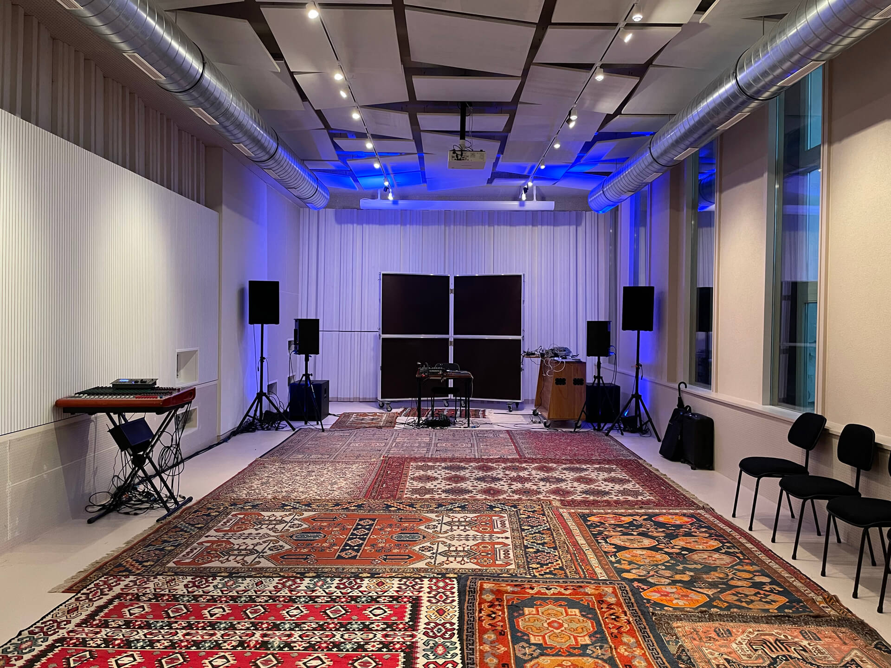

WESTBAHNSTUDIOS
Eingang: Preysinggasse 5
Anlieferung: Preysinggasse 7-9
1150 Wien
Info und Kontakt:
info@westbahnstudios.at
Eva Perner BA
+43 664 401 82 92
Bürozeiten:
Mo - Fr von 9:00 - 15:00 Uhr
Betreiber:
WBS Tonräume gemeinnützige GmbH
Preysinggasse 7-9/1
1150 Wien
Firmenbuchnummer:
FN 576047 d
Geschäftsführer und Gesellschafter:
Dominik Hummer, Peter Kutin, Daniel Riegler

supported by: